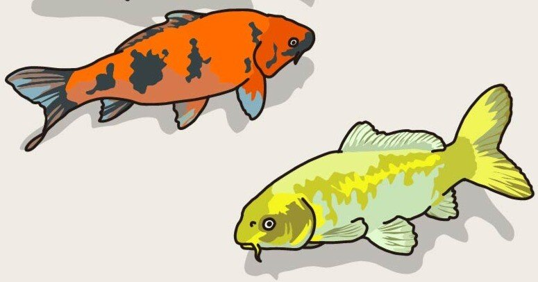
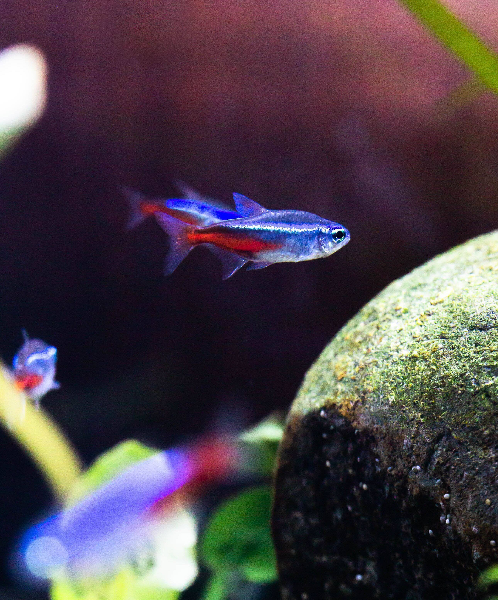

駄目だ。可愛すぎて直視できない！
こんな言葉……といったら失礼なのかもしれない。しかし、少なくとも僕の場合生きていて一度たりとも使うことはないだろうと高を括っていたのだが、それは唐突に訪れた。
ん？もしかしてだけど、熱帯魚のネオンテトラって、めちゃ可愛くね？
ああ。言ってしまった。まだ口にすら出したことないのに。
このような、聞かされる方はまるで関心がないものの誰かに伝えたくて仕方のない、そんなようなことを僕はnoteにいの一番に書いてしまう癖がある。
昔から根強い人気を誇る熱帯魚の中でも、定番中の定番ともいえるネオンテトラに惹かれたのは、やはり赤と青のコントラストが美しいその見た目。そして、性格も穏やかそのものであることを知り、僕はますます惹かれてしまったのである。
そんな特徴もあって、もし水槽で飼う場合も他種の魚との混泳を楽しむことだってできる。見た目がいいのに謙虚だなんて、人間でもそんな奴少ないぞ！君たち、もしや完璧人間か！(人間ではなく魚です)

そもそも、犬や猫を飼いたがる友人を多く持つ僕にとって、自分自身はペットを飼いたいなどと思うことのない、つまらない人生なんだろうなと思っていた。
自らの面倒すら片手間にしがちな人間だ。そんな人間が、犬の散歩や猫の毛づくろいなどできるわけがないのである。
しかし、ネオンテトラは違う！
餌やりや水槽の衛生確認は必要になるが、犬や猫に比べてコストも安いし家を留守にしてもさほど困ることはない。
そして、わずか3~4センチほどしかない体躯を存分に活かしながら妖艶な泳ぎを披露、観る者全てを魅了し、過酷な現代社会に打ちのめされているこの僕にも癒しを与えてくれる存在！そんなの、ネオンテトラ、つまりは彼女しかいないのだ！(※ちなみにオスももちろんいます)
ああ。今住んでいるマンションがペット可なら迷わず飼っていただろうに。
欲望に忠実な僕でも、さすがにルールを破ってまでも飼おうとは思わない。そんなことをしたところで、僕と彼女の生活はなにも幸せなんかじゃないんだから♡(※オスももちろんいます)
いつかきっと迎えに行くからね！
だから、その時まで待っていてくれよな！テトラ！(下の名前みたいに呼ぶんじゃないよ～)
……冗談はさておき、ここ最近、不思議と生活にハリが出ているかと思ったら、毎晩就寝前にネオンテトラの動画を観て寝ているからだと気づいた。そう、そんな習慣ができてからすこぶる調子がいいのだ。
まるで恋する乙女かのよう。その正体は30歳のしがないおじさんなのだが、おじさんでも恋したっていいじゃない！
うーん。言い表しがたいこの高揚感。
本当の恋も付き合うまでが一番楽しいというし、このもどかしい気持ちをずっと大切にしたいなと思う。僕にかかったネオンテトラの魔法はまだまだ解けそうにない。